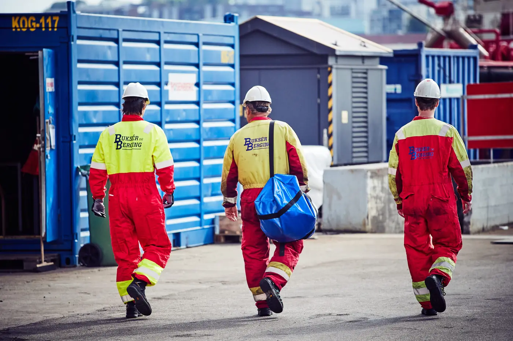

Selskapet
Fartøy, folk og utstyr
Buksér og Berging er ein maritim leverandør innan hamn og terminal, sleping, offshore og komplekse marine operasjonar. Selskapet har eigne fartøy, utstyrspool og eige mannskap.
I tillegg jobbar Bube med maritim ekspertise, nybygg og kompetanse, berekraftige operasjonar (Blueflow) og kvalitet og HMS.
- Kontor i Stavanger, Lysaker og Fedje
- Eigne fartøy og utstyrspool
- Kvalitet og HMS

Fagområde
Det vi kan
Maritim ekspertise
Operativ erfaring frå hamn og offshore.
Nybygg og kompetanse
Nybygg og opplæring av mannskap.
Blueflow
System for berekraftige operasjonar.
Vil du jobbe hos oss?
Send ein open søknad til crew@bube.no.